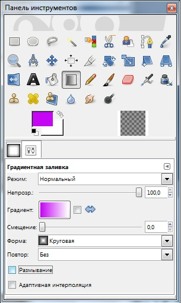
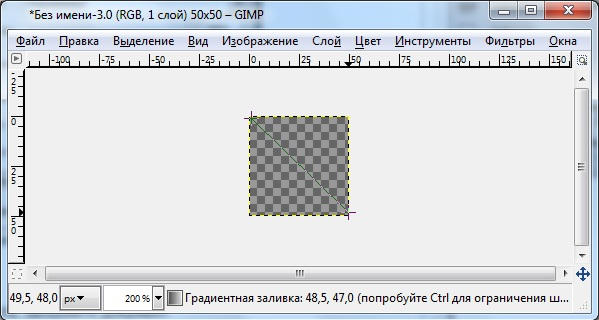
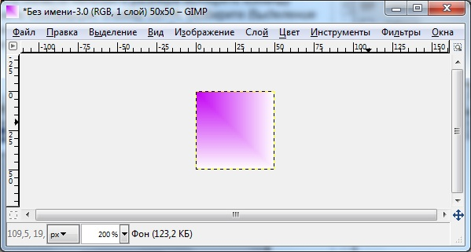
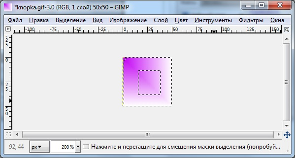
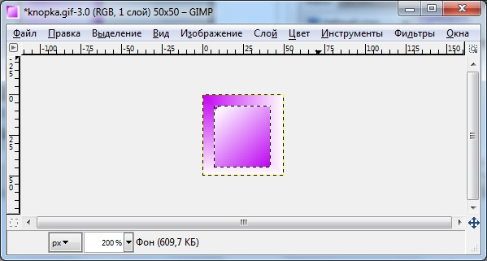
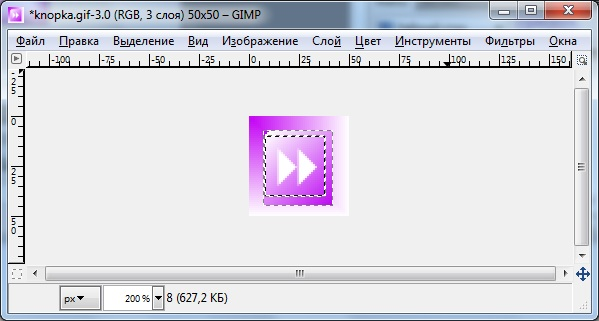
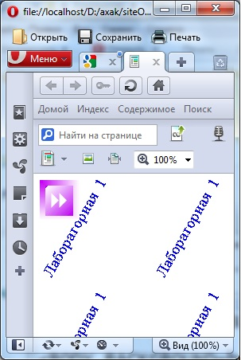
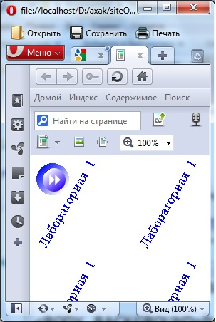

1.4.2 Создание кнопок для web-документов
Пример 1. Создать кнопку прямоугольной формы.
1. Создайте новое изображение, выбрав Файл ->Создать. В окне Новый задайте следующие параметры изображения: размер - 50x50 пикселов, разрешение - 72 пиксела на дюйм, RGB-цвет, фон - Прозрачный. Создан документ, состоящий из одного прозрачного слоя. Укрупните изображение, выбрав масштаб, например 200%.
2. Определите цвет, допустим сиреневый. Выберите на панели инструментовГрадиентная заливка

Рисунок 1
Задав параметры градиента, заполните документ, зажав клавишу мыши и потянув ее, задав направление, например, с верхнего левого угла к нижнему правому.

Рисунок 2

Рисунок 3
3. Для выделения в документе области меньшего размера выберите команду Выделение -> Все или нажмите комбинацию клавиш Ctrl+A. Выберите, в раскрывшемся окне Выбор границы в поле Ширина задайте небольшое число, например 7.

Рисунок 4
4. Выбрав инструмент Градиент, заполните выделенную область в обратном направлении.

Рисунок 5
5. Создайте новый слой с текстом с помощью инструмента Текст. Выберите шрифт Webdings, полужирного начертания и с кеглем 30 пунктов. Выберите цвет надписи, например, белый. Введите символ ">>", нажав клавишу 8 на основной клавиатуре, и щелкните на кнопке 0К. Выровняйте надпись на кнопке с помощью инструмента Перемещение.

Рисунок 6
6. Сохраните документ в формате GIF под именем knopкa1.gif в свою папку.
7.Проверть действие созданной кнопки, указав ее позицию на созданной web-странице.

Рисунок 7
Для создания кнопки такого же типа, но овальной формы, в окне нового документа - создайте выделение окружностью. Все остальные операций по созданию кнопки - окрашивание изображения, ввод текста - выполняются аналогично предыдущему. Для создания кнопки с использованием текстуры из другого графического файла откройте файл с текстурой, выделите в нем изображение, нажав комбинацию клавиш Ctrl+A, и запомните текстуру в буфере обмена. Перейдя в окно с изображением новой кнопки, выделите область будущей кнопки, например, овал, и выберите команду Редактирование -> Вставить В (Shift+Ctrl+V). Текстура будет вставлена в выделенную область в новом окне. Все остальные операции по созданию кнопки выполняются аналогично предыдущему.

Рисунок 8